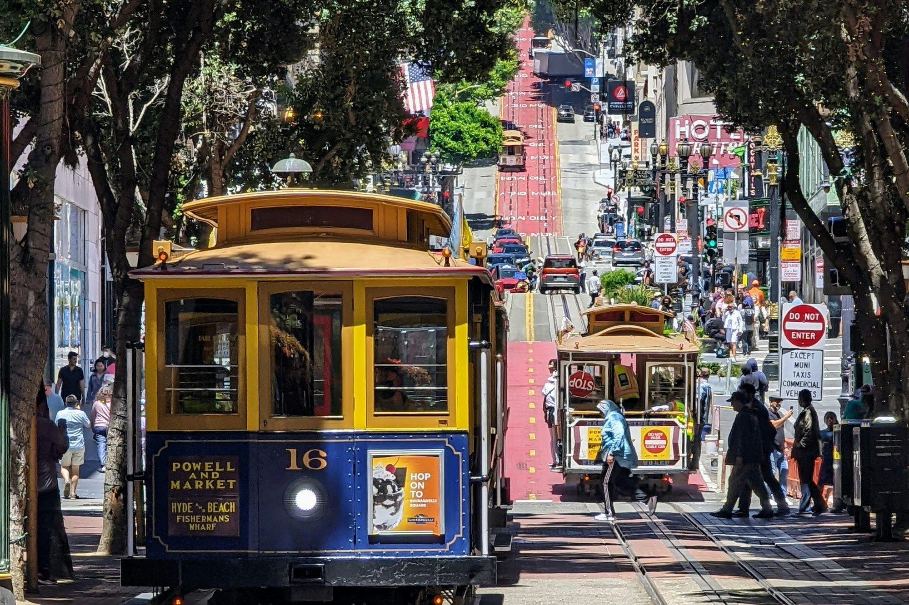

California · San Francisco
Where to stay in San Francisco
North Beach if this is the first time. The Wharf only if the ferry is the reason.

Sleep in North Beach if this is the first time and you want the neighborhood at breakfast. That is the top of a February 2025 r/AskSF thread: people who live in the Mission still tell visitors to stay in North Beach, because the Mission’s advantages show up over time and some of its blocks are a harder morning. A February 2026 thread says Union Square is convenient and can feel rough at night, block by block, and that North Beach is the easier bar crawl. The Wharf is where you stay only if the Alcatraz ferry is the reason you came.
If the ferry is the morning
Argonaut, 495 Jefferson
The Wharf hotel with the nautical building and the bay out the window. Yelp is a 4.0. Tripadvisor, on a very large count, is a 4.5, and the hotel’s listing says the rooms were refreshed in spring 2025. The review summary praises the location and then mentions dark rooms, slow check-in, and a restaurant that closes early. An October 2026 review likes the walk to the sea lions and wishes someone had helped with the bags. Stay here when you want to roll down to Pier 33. Leave for dinner. The Wharf at night is the trade you already accepted.
If you want a neighborhood hotel, not the Wharf
Hotel Kabuki, 1625 Post Street
A JDV by Hyatt in Japantown. Yelp is a 3.5. Tripadvisor is a 4.2. A September 2026 review praises the staff and then mentions air-conditioning trouble that the hotel answered with fans. It suits a quieter base between the Fillmore and the parks, with a bus downtown. It is the wrong hotel if you wanted to walk to the cable-car turnaround in your slippers.
The Marker, 501 Geary Street
Yelp is a 3.5 on a few hundred reviews. Tripadvisor is a 4.3 on several thousand, and the summary praises the staff and then says some guests worry about the blocks around the hotel. That matches the February 2026 thread. Use it if you want BART, the Powell cars, and a lot of other hotels as backup. Walk the block in daylight on the day you arrive, or pick North Beach and ride in.
Phoenix Hotel, 601 Eddy Street
A 44-room motor lodge with a heated pool, on the edge of the Tenderloin, which is how the hotel describes itself on Tripadvisor. The location score on that listing is the weak one. Recent reviews praise the staff and the courtyard. An August 2026 review says a watch left in a room drawer was gone. It suits people who want the pool. It does not suit anyone who asked for quiet luxury.
If the Presidio is the walk
Lodge at the Presidio, 105 Montgomery Street
Inside the park. Yelp’s count is tiny and the score is high. Tripadvisor’s count is larger and the score is higher still. The listing describes free breakfast, a wine hour, and a shuttle downtown. You are next to Crissy Field and a long way from the Mission at night. It suits a couple who will eat early or ride to dinner. It is a bad one-night base before an early BART ride from downtown. You still have to get to a station.
The decision
North Beach or the Wharf for a first three nights, and leave the building for the Mission once. Union Square if the priority is the train and the cable car and you will not judge the city by the block. The Mission as a place to sleep is what residents love and what that February 2025 thread tells visitors to postpone. Hayes Valley and the Castro are excellent second trips. They are not required to make the first one work.
Sources
Hours, fares, and closures change. Ratings are the scores and review counts read in October 2026. Community notes are paraphrased from threads linked below.
- Golden Gate Bridge, sidewalks
- Golden Gate Bridge, parking
- NPS, Alcatraz
- SFMTA, cable cars
- SFMTA, Powell-Hyde
- Presidio, Crissy Field
- San Francisco Travel, neighborhoods
- San Francisco Travel, Fisherman’s Wharf
- San Francisco Travel, North Beach
- San Francisco Travel, Mission
- BART, airport
- La Taqueria
- r/AskSF, Mission or North Beach, Feb 2025
- r/AskSF, where to stay, Feb 2026
- r/AskSF, neighborhoods, Jan 2026
Last checked: October 2026.